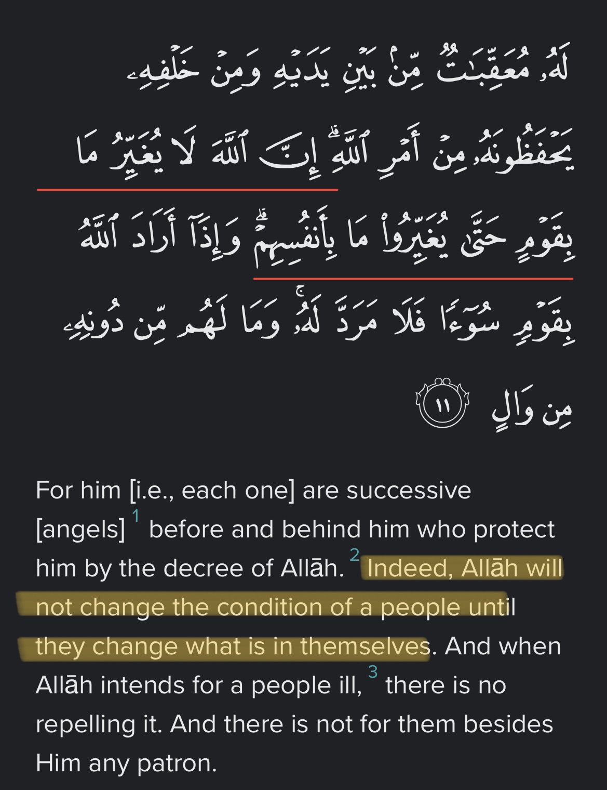
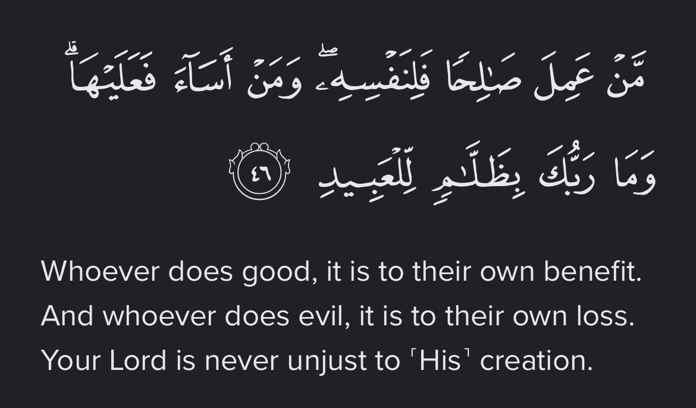
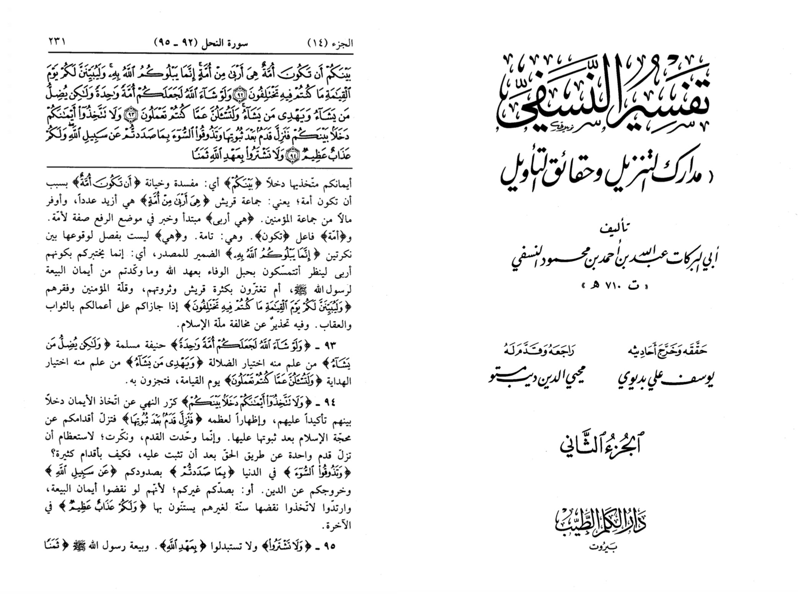

That claim is made from the Quran in chapter 16 verse number 93
سورة النحل
١٦:۹۳
وَلَوْ شَآءَ ٱللَّهُ لَجَعَلَكُمْ أُمَّةً وَٰحِدَةً وَلَـٰكِن يُضِلُّ مَن يَشَآءُ وَيَهْدِى مَن يَشَآءُ ۚ وَلَتُسْـَٔلُنَّ عَمَّا كُنتُمْ تَعْمَلُونَ
سورة النحل
١٦:۹۳
وَلَوْ شَآءَ ٱللَّهُ لَجَعَلَكُمْ أُمَّةً وَٰحِدَةً وَلَـٰكِن يُضِلُّ مَن يَشَآءُ وَيَهْدِى مَن يَشَآءُ ۚ وَلَتُسْـَٔلُنَّ عَمَّا كُنتُمْ تَعْمَلُونَ
So the claim is Allah misguides
So the first rule of the tafsir of the Qūr’ān is the Qūr’ān itself
So lets see what the Qūr’ānīc passage says
Surah Al-An'aam (The Cattle)
6:148
The polytheists will argue, “Had it been Allah’s Will, neither we nor our forefathers would have associated others with Him ˹in worship˺ or made anything unlawful.” Likewise, those before them rejected the truth until they tasted Our punishment. Ask ˹them, O Prophet˺, “Do you have any knowledge that you can produce for us? Surely you follow nothing but ˹false˺ assumptions and you do nothing but lie.”
Translation: Dr. Mustafa Khattab, the Clear Quran | Meccan
Surah Al-Lail (The Night)
92:5
As for the one who is charitable, mindful ˹of Allah˺,
92:6
and ˹firmly˺ believes in the finest reward,
92:7
We will facilitate for them the Way of Ease.
92:8
And as for the one who is stingy, indifferent ˹to Allah˺,
92:9
and ˹staunchly˺ denies the finest reward,
92:10
We will facilitate for them the path of hardship.
Translation: Dr. Mustafa Khattab, the Clear Quran | Meccan
Surah At-Tawba (The Repentance)
9:115
Allah would never consider a people deviant after He has guided them, until He makes clear to them what they must avoid. Surely Allah has ˹full˺ knowledge of everything.
Translation: Dr. Mustafa Khattab, the Clear Quran | Medinan
So the meaning is Allah leaves people in misguidance for those who want misguidance and guides people who are sincere
That can be seen in Dr mustafa khattab translation of 16:93
Had Allah willed, He could have easily made you one community ˹of believers˺, but He leaves to stray whoever He wills and guides whoever He wills.
Footnote
He guides those who are sincere in their quest for guidance.


Imam Abi Barakat al-Nasafi al-Hanafi al-Maturidi says under this verse:
“(God misguides whom he wills) This is for those who have chosen the path of misguidance , (And guides whomever he wills) Whoever he knows has chosen the path of guidance”
